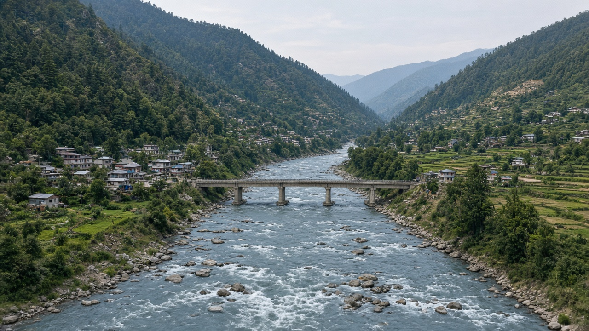

Environmental Governance and Institutions
Published on August 20, 2026

Environmental governance is the set of rules, organizations, and power relations that decide who may use air, water, land, and living resources, and who is held to account when harm occurs. Institutions include environment ministries, sector regulators, courts, audit offices, local governments, customary assemblies, and the civic groups that litigate or monitor decisions. Formal law is only one layer: informal norms, political incentives, and budget practice often determine whether a statute becomes a permit, a fine, or a dead letter. Multi-level systems—international, national, provincial, and municipal—must assign authority clearly, or agencies duplicate licenses while gaps remain around transboundary rivers, waste streams, and climate risk.
Good institutions make information public, separate rule-making from project promotion, and give affected people standing to challenge decisions. Independent regulators and environmental benches can reduce capture by ministries that also sponsor dams, mines, or industrial parks. Parliamentary committees, supreme audit institutions, and right-to-information laws create a second look at spending and permits. Coordination bodies are needed because energy, transport, agriculture, and finance ministries often set the real environmental path through subsidies and infrastructure, not through the environment ministry alone. Career incentives for inspectors and planners matter as much as the text of an act.
Weak governance shows up as overlapping mandates, unpaid field staff, politicized clearances, and data that never reach the public. Reform is less about creating new agencies than aligning incentives: secure tenure, predictable enforcement, and promotion paths that reward compliance work rather than speed of approval. Mapping who holds the stamp, who holds the budget, and who can legally say no reveals the true decision tree. Durable environmental outcomes follow when institutions treat ecological limits as constraints on all sectors, not as a specialist file that can be waived when growth targets tighten.
वातावरणीय शासन भनेको नियम, संगठन र शक्ति सम्बन्धको समूह हो जसले हावा, पानी, जमिन र जीवित स्रोत कसले प्रयोग गर्न पाउँछ र हानि हुँदा कसलाई जवाफदेही बनाइन्छ भन्ने तय गर्छ। संस्थामा वातावरण मन्त्रालय, क्षेत्रगत नियामक, अदालत, लेखा परीक्षण कार्यालय, स्थानीय सरकार, प्रथागत सभा र मुद्दा वा निगरानी गर्ने नागरिक समूह पर्छन्। औपचारिक कानुन एउटा तह मात्र हो: अनौपचारिक चलन, राजनीतिक प्रोत्साहन र बजेट अभ्यासले ऐन अनुमतिपत्र, जरिवाना वा कागजको अक्षर बन्छ कि भन्ने प्रायः तय गर्छ। अन्तर्राष्ट्रिय, राष्ट्रिय, प्रदेश र नगर तहले अधिकार स्पष्ट बाँड्नुपर्छ, नत्र निकायले इजाजत दोहोर्याउँछन् र सीमापार नदी, फोहोर र जलवायु जोखिममा खाली ठाउँ रहन्छ।
राम्रा संस्थाले जानकारी सार्वजनिक गर्छन्, नियम बनाउने काम आयोजना प्रवर्द्धनबाट छुट्याउँछन् र प्रभावितलाई निर्णय चुनौती दिने हैसियत दिन्छन्। स्वतन्त्र नियामक र वातावरण इजलासले बाँध, खानी वा औद्योगिक क्षेत्र प्रायोजित गर्ने मन्त्रालयको कब्जा कम गर्न सक्छन्। संसदीय समिति, सर्वोच्च लेखा संस्था र सूचनाको हकले खर्च र अनुमतिमा दोस्रो नजर दिन्छ। ऊर्जा, यातायात, कृषि र अर्थ मन्त्रालयले अनुदान र पूर्वाधारबाट वास्तविक वातावरणीय बाटो तय गर्ने हुँदा समन्वय निकाय चाहिन्छ, वातावरण मन्त्रालय एक्लैबाट होइन। निरीक्षक र योजनाकारको वृत्ति प्रोत्साहन ऐनको पाठ जत्तिकै महत्त्वपूर्ण हुन्छ।
कमजोर शासन दोहोरिएको जिम्मेवारी, तलब नपाएका स्थलगत कर्मचारी, राजनीतिककृत स्वीकृति र जनतासम्म नपुग्ने तथ्याङ्कका रूपमा देखिन्छ। सुधार नयाँ निकाय खोल्नुभन्दा प्रोत्साहन मिलाउनु हो: सुरक्षित स्वामित्व, अनुमानयोग्य कार्यान्वयन, र स्वीकृतिको गति होइन पालनाको कामलाई पुरस्कृत गर्ने बढुवा बाटो। कससँग छाप छ, कससँग बजेट छ र कानुनी रूपमा कसले अस्वीकार गर्न सक्छ भनी नक्सा गर्दा वास्तविक निर्णय वृक्ष देखिन्छ। पारिस्थितिक सीमा सबै क्षेत्रमा लागू हुने बाध्यता मान्दा मात्र टिकाउ नतिजा आउँछ, वृद्धि लक्ष्य कसिँदा छुट दिन मिल्ने विशेषज्ञ फाइल होइन।
पर्यावरणीय शासन नियमों, संगठनों और शक्ति संबंधों का समूह है जो तय करता है कि वायु, जल, भूमि और जीवित संसाधन कौन उपयोग कर सकता है और हानि होने पर किसे जवाबदेह ठहराया जाएगा। संस्थाओं में पर्यावरण मंत्रालय, क्षेत्रीय नियामक, न्यायालय, लेखा परीक्षा कार्यालय, स्थानीय सरकार, प्रथागत सभाएँ और मुकदमा या निगरानी करने वाले नागरिक समूह आते हैं। औपचारिक कानून केवल एक परत है: अनौपचारिक रीति, राजनीतिक प्रोत्साहन और बजट व्यवहार अक्सर तय करते हैं कि अधिनियम अनुमति पत्र, जुर्माना या मृत अक्षर बनेगा। अंतरराष्ट्रीय, राष्ट्रीय, प्रांतीय और नगर स्तरों को अधिकार स्पष्ट बाँटना चाहिए, नहीं तो एजेंसियाँ लाइसेंस दोहराती हैं और सीमा पार नदी, कचरा तथा जलवायु जोखिम में रिक्तता रहती है।
अच्छी संस्थाएँ जानकारी सार्वजनिक करती हैं, नियम बनाने को परियोजना प्रचार से अलग करती हैं और प्रभावित लोगों को निर्णय चुनौती देने का अधिकार देती हैं। स्वतंत्र नियामक और पर्यावरण पीठ बाँध, खदान या औद्योगिक पार्क प्रायोजित करने वाले मंत्रालयों के कब्जे को घटा सकती हैं। संसदीय समितियाँ, सर्वोच्च लेखा संस्थाएँ और सूचना के अधिकार खर्च तथा अनुमतियों पर दूसरी नज़र डालते हैं। ऊर्जा, परिवहन, कृषि और वित्त मंत्रालय अनुदान और अवसंरचना से वास्तविक पर्यावरण पथ तय करते हैं, इसलिए समन्वय निकाय चाहिए, केवल पर्यावरण मंत्रालय से काम नहीं चलता। निरीक्षकों और योजनाकारों के कैरियर प्रोत्साहन अधिनियम के पाठ जितने ही महत्त्वपूर्ण हैं।
कमज़ोर शासन दोहरी जिम्मेदारी, अवैतनिक क्षेत्र कर्मचारी, राजनीतिककृत स्वीकृति और जनता तक न पहुँचने वाले आँकड़ों के रूप में दिखता है। सुधार नए कार्यालय खोलने से अधिक प्रोत्साहन मिलाना है: सुरक्षित स्वामित्व, अनुमान योग्य प्रवर्तन, और स्वीकृति की गति नहीं अनुपालन कार्य को पुरस्कृत करने वाले पदोन्नति मार्ग। किसके पास मुहर है, किसके पास बजट है और कानूनी रूप से कौन मना कर सकता है, यह नक्शा वास्तविक निर्णय वृक्ष दिखाता है। जब संस्थाएँ पारिस्थितिक सीमाओं को सभी क्षेत्रों पर लागू बाध्यता मानती हैं—वृद्धि लक्ष्य कसने पर माफ करने योग्य विशेषज्ञ फ़ाइल नहीं—तब टिकाऊ परिणाम आते हैं।